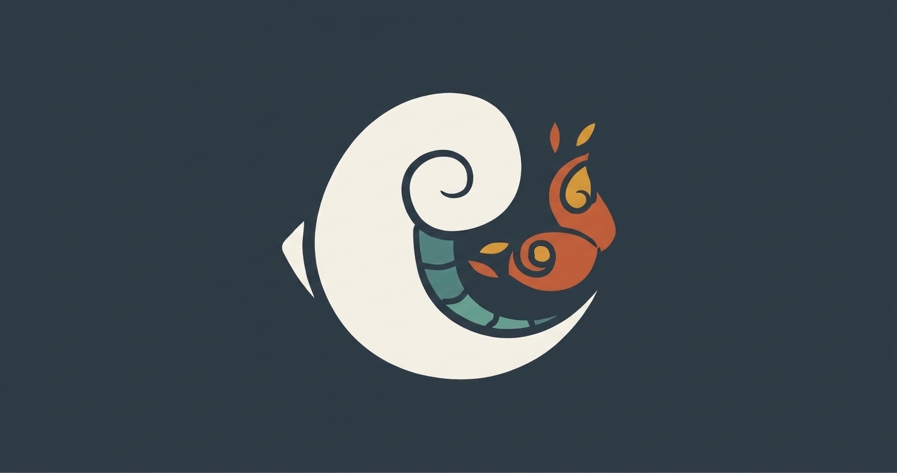

"Seguiremos cocinando, con el alma y con empeño, porque quien nace en esta tierra, cocina también su sueño"..
Herencia culinaria con el auténtico sabor del norte y la calidez de nuestras brasas.
EXPLORAR AHORA

Herencia culinaria con el auténtico sabor del norte y la calidez de nuestras brasas.
EXPLORAR AHORA
Nuestra identidad nace de las raíces chulucanenses y piuranas. Honramos la memoria, los saberes y los sabores de nuestra tierra, y los compartimos a través de una experiencia gastronómica que une tradición, identidad e innovación.
Preservar, honrar y compartir la riqueza de nuestra herencia culinaria piurana, con raíces en Chulucanas, mediante una propuesta gastronómica que une tradición, identidad e innovación. Trabajamos con pasión, respeto por nuestros ingredientes y compromiso con la calidad, para convertir cada preparación en una experiencia que conecta generaciones y despierta emociones.
Ser un referente de la gastronomía piurana y del norte del Perú, reconocido por preservar nuestra identidad culinaria y proyectarla hacia nuevas generaciones y destinos. Queremos trascender como una marca que crea experiencias memorables, fortalece el orgullo regional y convierte nuestra herencia en un legado para el futuro.
Orgullo por nuestro origen chulucanense y piurano.
Respeto por las recetas, saberes y costumbres heredadas.
Evolucionar la propuesta sin perder nuestra esencia.
Hacer que cada visitante se sienta acogido y parte de nuestra historia.
Cuidar cada ingrediente, preparación, servicio y experiencia.
Transmitimos nuestra historia con calidez, calidad y coherencia.